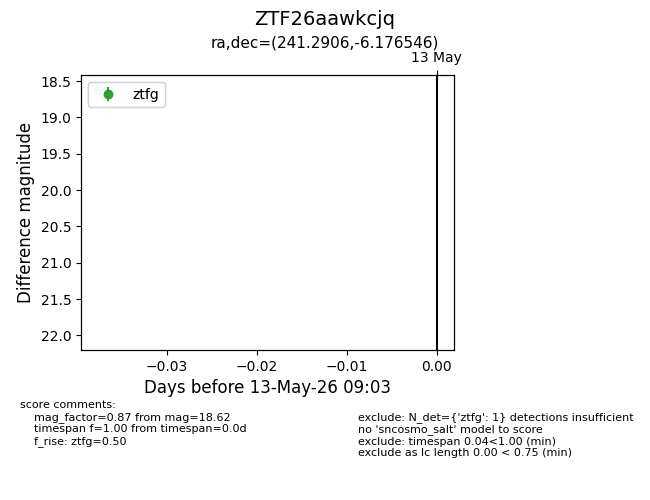
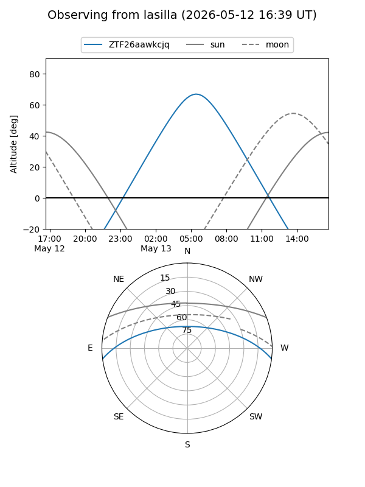
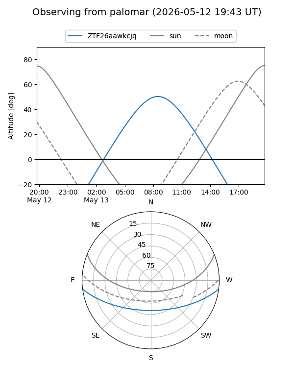

ZTF26aawkcjq
Target ZTF26aawkcjq at 2026-05-13 09:05
Aliases and brokers:
FINK: link
Lasair: link
ALeRCE: link
alt names
ZTF26aawkcjq (ztf,fink_ztf)
Coordinates:
equatorial (ra, dec) = 241.2906,-6.17655
equatorial (HMS+DMS) = 16:05:09.74,-06:10:35.57
galactic (l, b) = (4.8683,+32.55009)
Flags:
Photometry:
last ztfg=18.62
1 ztfg detections
Lightcurve

Visibility


Additional plots